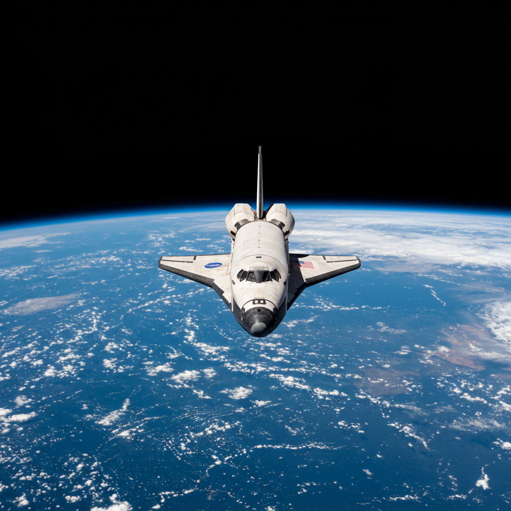

STS-41-D – Discovery
Agencia: NASA
Lanzamiento: 30 de agosto de 1984 – 12:41 UTC
Duración total: 6 días, 0 horas, 56 minutos
Tipo de misión: Lanzamiento de satélites y pruebas del sistema Discovery
Vehículo: Discovery (OV-103)
Centro de lanzamiento: Kennedy Space Center – Plataforma 39A
Tripulación
- Henry Hartsfield – Comandante
- Michael L. Coats – Piloto
- Judith Resnik – Especialista de misión
- Steven Hawley – Especialista de misión
- Richard Mullane – Especialista de misión
- Charles D. Walker – Especialista de carga útil (McDonnell Douglas)
Objetivos de la misión
Verificar el funcionamiento del orbitador Discovery en su primer vuelo. Lanzar tres satélites de comunicaciones (SBS-D, SYNCOM IV-2, TELSTAR 3C) y realizar experimentos técnicos y biomédicos en órbita.
Realizar observaciones con la cámara IMAX para uso documental.
Datos clave
Órbitas completadas: 97
Altitud orbital promedio: 301 km
Velocidad orbital: 27,780 km/h
Reingreso y aterrizaje: 5 de septiembre de 1984 en Edwards Air Force Base
Legado histórico
Discovery se convirtió en el transbordador más utilizado del programa STS, con 39 misiones. STS-41-D marcó el inicio de su legado operativo, estableciendo estándares de fiabilidad y versatilidad. Judith Resnik participó en esta misión antes de formar parte de la tripulación del Challenger en STS-51-L.